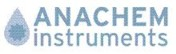
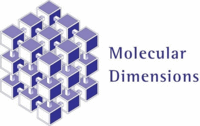

Biological Structures Group
Winter Meeting 2009
Royal Free Hospital, London
Sponsors
The following companies are generously supporting the meeting:






Registration
Registration fees for the meeting are as follows:
Standard rate £45.00
Student and concessions £35.00
The concessionary rates apply for students and retired individuals.
Note: these rates include one year’s membership of the BCA which can be refunded upon request after the meeting.
The registration form and other relevant details may be obtained below:
word file
pdf file
Please e-mail your completed form to:
jbcooper@medsch.ucl.ac.uk
and print a copy to include with your payment (cheque payable to 'University College London') which should be posted to:
Prof. J. B. Cooper,
Centre for Amyloidosis and Acute Phase Proteins,
UCL Department of Medicine (Royal Free Campus),
Rowland Hill St,
London,
NW3 2PF.
Closing date for registration is Friday 4th December 2009
If you would like to bring a poster, please e-mail an abstract to the organiser before the closing date.